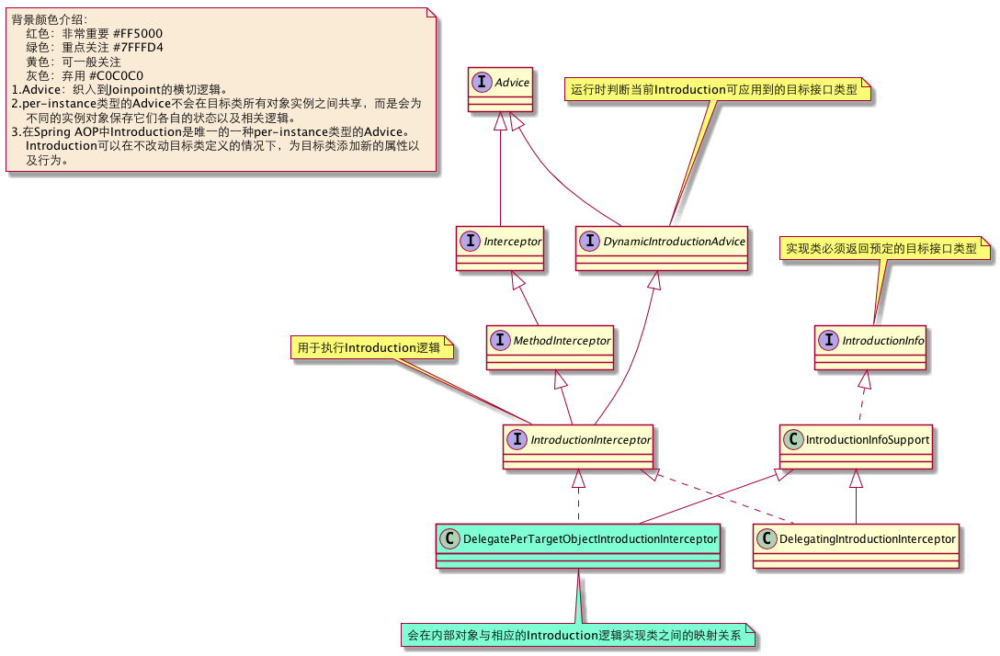

Spring-AOP基础设施介绍-核心
我们看下Spring给我们提供了哪些基础组件(AspectJ相关Aop支持单独一篇介绍)，大家看之前，要明白先有规范，再有实现。
一.核心组件
1.Joinpoint
Joinpoint：织入操作的系统执行点。在Spring AOP落地过程中，用于协调横切逻辑(Advice)执行和目标方法执行。
{kind=link}
2.Pointcut
(a).Pointcut：用于描述Joinpoint集合。其通过对类（ClassFilter）和方法（MethodMatcher）的描述来表达。
{kind=link}
(b).ClassFilter：描述符合织入逻辑类的特征，验证当前类是否匹配；
{kind=link}
(c).MethodMatcher：描述符合织入逻辑方法的特征，验证当前方法是否匹配；
{kind=link}
3.Advice
提示：
Advice分两种类型：
1.per-class类型的Advice：该类型的Advice的实例可以在目标对象类的
所有实例之间共享
---我们把这种类型的作为学习的重点
2.per-instance类型的Advice不会在目标类所有对象实例之间共享，而是
会为不同的实例对象保存它们各自的状态以及相关逻辑。
(a).per-class类型的Advice：
{kind=link}
(b).per-instance类型的Advice类图：
{kind=link}

4.Advisor
Advisor：可以理解为对应AOP规范的Aspect的概念，包含了织入逻辑（Advice）和Pointcut。
(a).per-class类型的Advisor：
{kind=link}
(a).per-instance类型的Advisor：
{kind=link}
二.其他组件支持
Joinponit，Pointcut，Advice，Advisor(与Aspect对应)都是AOP规范中对应的最基础的概念，真正工程落地，还需要其他组件支持。以下分别描述：
1.AdvisorAdapter
Spring中各种通知最终都是通过环绕通知（MethodInterceptor）来实现的。所以就需要一个中间角色，在持有各种通知的Advisor在提取织入逻辑时，统一把通知转换为环绕通知（MethodInterceptor），而AdvisorAdapter就是承担这一角色的。我们看下它的类图：
{kind=link}
2.AdvisedSupport
在生成代理与代理运行时，需要像：目标对象，生成代理方式，Class信息，织入逻辑，切点描述等大量的参数，如果参数分别传递，则方法一方面失去了扩展性，另一方面可读性也较差，所以需要一个维护AOP上下文环境的对象，AdvisedSupport就是承担这一角色的，类图如下：
{kind=link}
有了以上基础组件的支持，我们就看看Spring是具体如何使用这些组件的。我们先从代理生成时，如何查找Bean适用的Advisor，那我们进入下一篇：代理生成中如何查找Bean适用的Advisor。
快速导航：